Overview
I started this project by writing convolution from scratch and finished it by putting Edward Cullen's face inside Batman's cowl. Almost everything in between uses the same few filters (a box filter, a finite difference, a Gaussian) and the same idea: an image can be split into slow, coarse changes and fast, fine ones, and the two can be handled separately.
Part 1 is filters and edges: convolution, derivatives, and why blurring before differentiating gives much cleaner edges. Part 2 uses those filters to sharpen images, to build hybrid images whose interpretation changes with viewing distance, and to blend unrelated images with a seam that is soft for broad color and sharp for fine detail.
| 1.1 | Box filter | 9 × 9 · zero pad · 200 × 200 timing crop |
|---|---|---|
| 1.2 | Edge threshold | 0.20 |
| 1.3 | Gaussian · threshold | 9 × 9, σ 2.0 · 0.15 |
| 2.1 | Unsharp α | 0.5 · 1.0 · 2.0 |
| 2.2 | Derek / Nutmeg | σhigh 2 · σlow 8 |
| 2.2 | Edward / Batman | σhigh 2 · σlow 4 |
| 2.2 | Zendaya / Mona Lisa | σhigh 5 · σlow 4 |
| 2.2 | Bells & whistles | color: gray · high · low · both |
| 2.3–4 | Stacks | 5 levels · σ 0, 1, 2, 4, 8 |
Part 1
Filters and Edges
Convolution from scratch, finite differences, and derivative-of-Gaussian filters. Mostly grayscale.
Convolutions from Scratch
I wrote two versions of 2D convolution using only NumPy arrays. The first is the definition written out literally: four nested loops, two over output pixels and two over kernel entries. The second keeps the two loops over output pixels and replaces the inner pair with one array operation: slice out the kernel-sized patch, multiply it elementwise by the kernel, sum.
Both versions zero-pad the image by k − 1 pixels per axis (split between the two sides), so the output stays the same size as the input. Both also flip the kernel in x and y before sliding it. That flip is the difference between convolution and cross-correlation. It doesn't matter for a symmetric box filter, but for [1, −1] it changes the sign of every response.
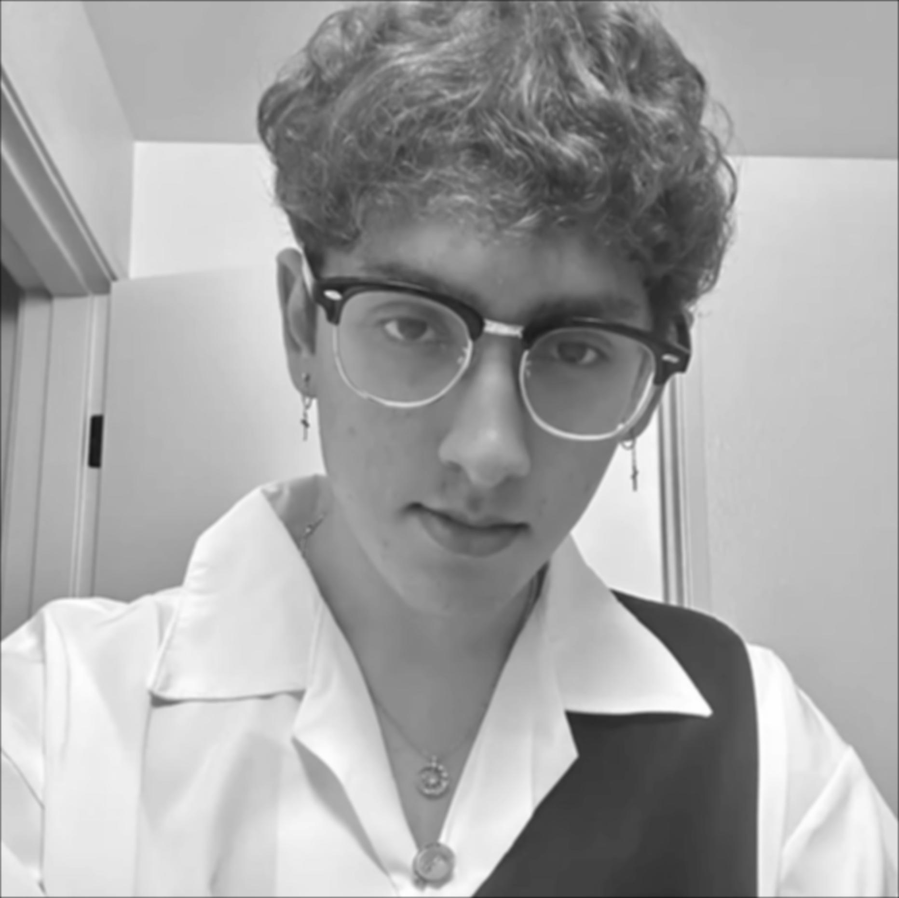
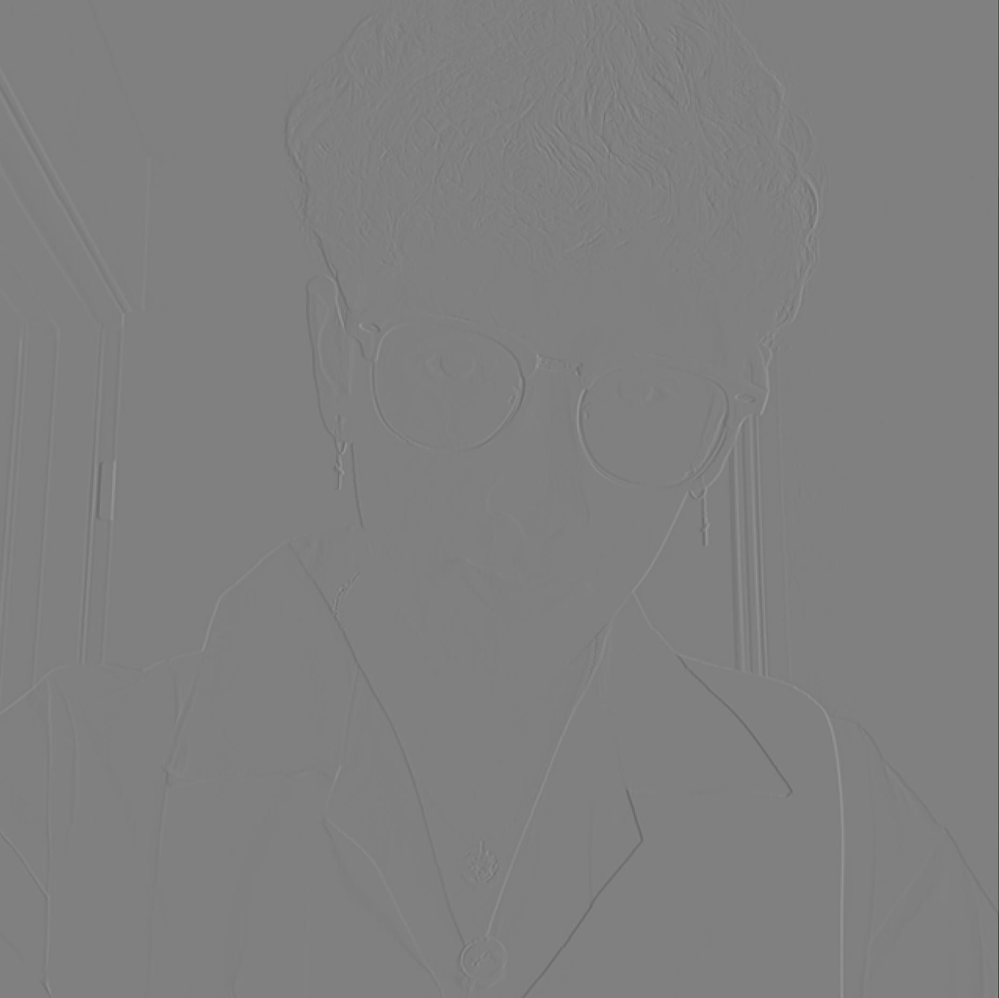
Dx = [1, −1]. Responds to left–right changes.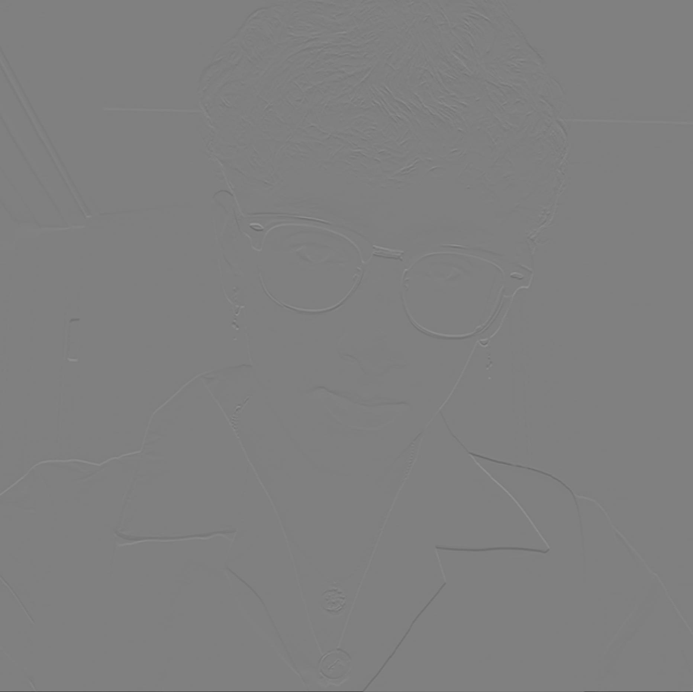
Dy = [1, −1]ᵀ. Responds to top–bottom changes.Derivative images are signed, so I display them as 0.5 + 0.5 · value / max|value|: flat gray is zero, darker is negative, brighter is positive. On a photo this size the edges are thin, which is why the full frames look almost blank.
Timing and correctness
I checked both versions against scipy.signal.convolve2d with mode="same", boundary="fill", fillvalue=0, which is the same zero-padded, same-size setup. The timings are on a 200 × 200 crop of the selfie with the 9 × 9 box filter. At about a second per 40,000 pixels, the four-loop version would need roughly 90 seconds for the full image.
| Method | Time | Max |error| vs SciPy |
|---|---|---|
| 4 loops | 1.0321 s | 1.9984014443252818e-15 |
| 2 loops | 0.0770 s | 6.661338147750939e-16 |
| SciPy | 0.0038 s | — |
Both errors are around 10−15: floating-point roundoff from adding the same 81 products in a different order. Removing the Python-level inner loops made my version about 13× faster. SciPy was still about 20× faster than that, because its loops run in compiled code instead of the interpreter.
# conv2d_four_loops: one multiply-add at a time
for ky in range(kh):
for kx in range(kw):
output[y, x] += (
padded[y + ky, x + kx]
* flipped_kernel[ky, kx]
)
# conv2d_two_loops: whole kernel-sized patch at once
flipped_kernel = np.flip(kernel, axis=(0, 1))
output = np.zeros_like(image, dtype=float)
for y in range(h):
for x in range(w):
region = padded[y:y + kh, x:x + kw]
output[y, x] = np.sum(region * flipped_kernel)Finite Difference Operator
The simplest derivative filters are Dx = [1, −1] and Dy = [1, −1]ᵀ. Convolving the cameraman image with each gives the partial derivatives in x and y, and the gradient magnitude at each pixel is √(∂x² + ∂y²). I normalized the magnitude by its maximum, so the threshold is a fraction of the strongest edge in the image.
Choosing the threshold was a trade-off. Lower thresholds kept weak edges, but they also let in much more of the grass and background texture. At 0.10 the bottom of the frame is mostly white speckle. Higher thresholds cleaned up the grass but started dropping real boundaries: by 0.30 the outline of his coat breaks into pieces and the buildings on the horizon mostly disappear. I used 0.20 because it was the compromise I liked best visually. Even there, some speckle survives in the grass, because [1, −1] reacts to every pixel-level fluctuation. Smoothing first (1.3) is the fix.
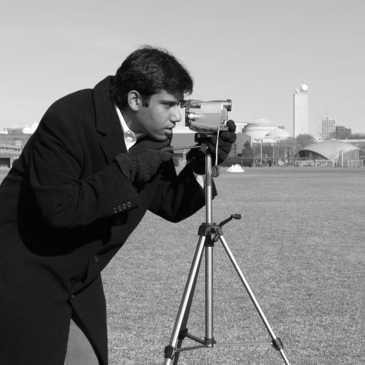
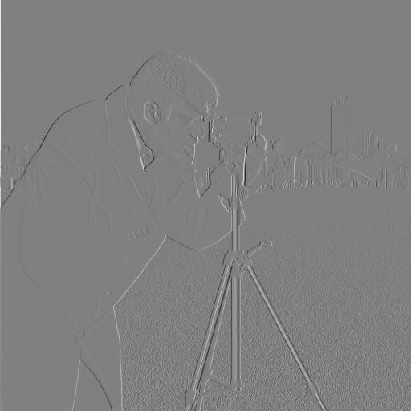
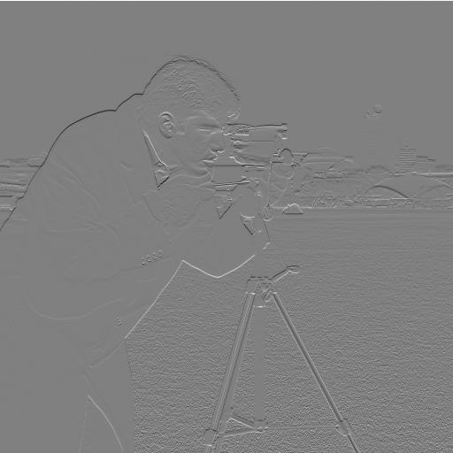
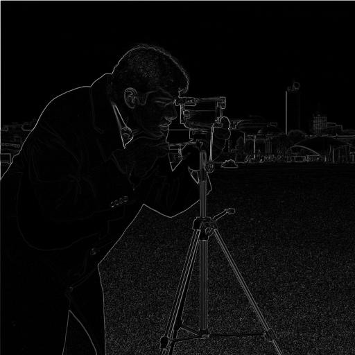
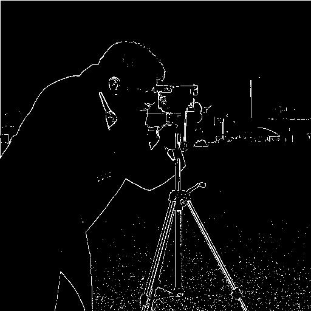
Derivative of Gaussian
To get rid of the noise, I blurred before differentiating. I built a 9 × 9 Gaussian with σ = 2.0 by taking the 1D kernel from cv2.getGaussianKernel(9, 2.0) and its outer product with itself, then computed the edges two ways:
- Method 1. Blur the image with G, then convolve the blurred image with Dx and Dy.
- Method 2. Convolve G with Dx and Dy once (full mode, so each filter grows by a pixel in its derivative direction), then apply those two derivative-of-Gaussian filters directly to the original.
Convolution is associative, (I ∗ G) ∗ D = I ∗ (G ∗ D), so these should match, and they do. Away from a 10-pixel border, the largest difference was about 7 × 10−16 for both directions, which is basically numerical zero. The border has to be excluded because method 1 crops the blurred image back to 512 × 512 and pads it with zeros again before differentiating, so the methods disagree in a thin strip around the edge.
Method 1
blur, then Dx / Dy
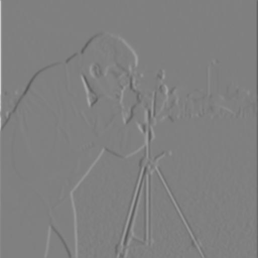
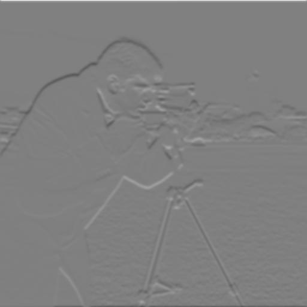
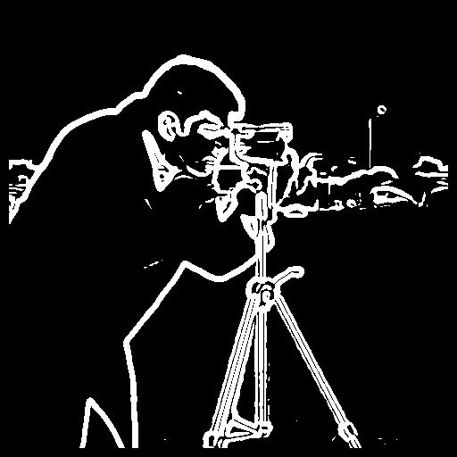
Method 2
one DoG filter
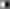
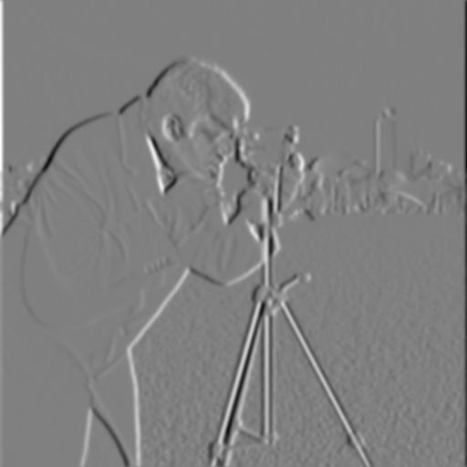
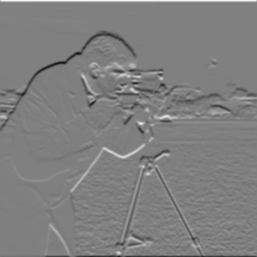
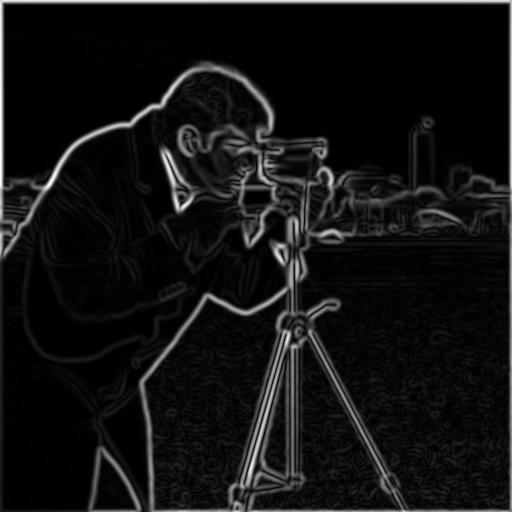

Max interior |method 1 − method 2|
Dx 7.424616477180734e-16 Dy 7.180670988371496e-16
The smoothed edges are a big improvement over 1.2. The grass noise is basically gone and the outlines are continuous instead of dotted. Since smoothing removed most of the noise, I could lower the threshold to 0.15 and keep fainter edges without the grass coming back. The cost is that edges are thicker and a little less precisely located, because the Gaussian spreads each one across a few pixels. I also normalized by the maximum inside the 10-pixel margin and zeroed the edge map along the border, since zero padding creates a fake edge around the whole frame.
Part 2
Applications
Sharpening, hybrid images, Gaussian and Laplacian stacks, and multiresolution blending.
Image Sharpening
Unsharp masking: blur the image, subtract the blur to isolate the high frequencies, and add some of them back.
high = f − f ∗ G
sharpened = f + α · (f − f ∗ G)
= f ∗ ((1 + α) e − α G)
G is the same 9 × 9, σ = 2.0 Gaussian from 1.3, and e is the unit impulse: a 9 × 9 kernel that's all zeros except a 1 in the center, so f ∗ e = f. Folding everything into one kernel means sharpening is a single convolution per RGB channel, which is what my unsharp_mask() does.
def unsharp_mask(image, alpha):
sharpening_kernel = (
(1 + alpha) * impulse
-
alpha * G
)
return convolve_color(
image,
sharpening_kernel
)Taj Mahal

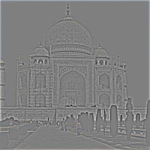
α = 0.5
α = 1.0 my pick
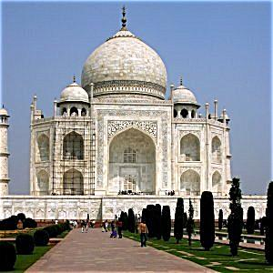
α = 2.0

α = 0.5 is subtle. α = 1.0 is the one I ended up preferring: the inlay panels, arches and minarets read clearly and nothing looks processed. At α = 2.0 it starts to look overdone. Local contrast is exaggerated, the marble on the dome turns gritty, and the dome and the cypress trees pick up dark outlines with lighter halos against the sky.
The thin bright line along the borders of the sharpened images comes from zero padding: the blur pulls border pixels toward black, so "original − blurred" is positive there and gets added back in.
My selfie
I used α = 1.0 on my selfie as well. Here the 9 × 9 kernel is tiny compared to an 1864-pixel-wide photo, so it only touches the finest detail, and at page size the difference is hard to see. The high-frequency image looks like flat gray until you zoom in, so the crops below are of the glasses.

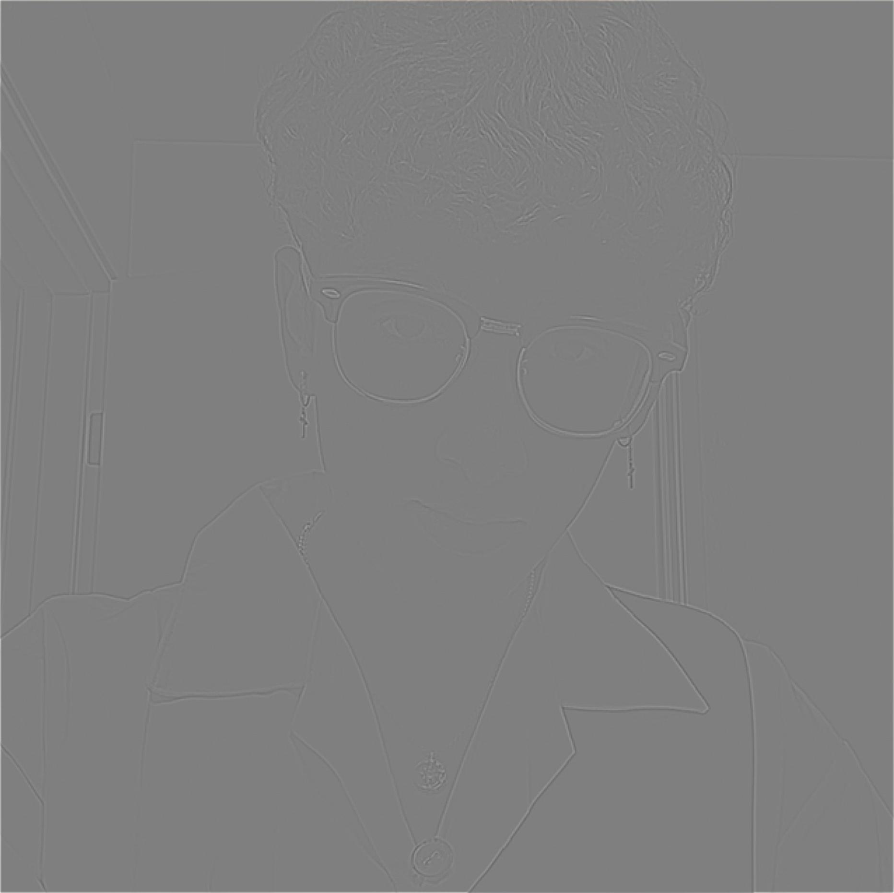
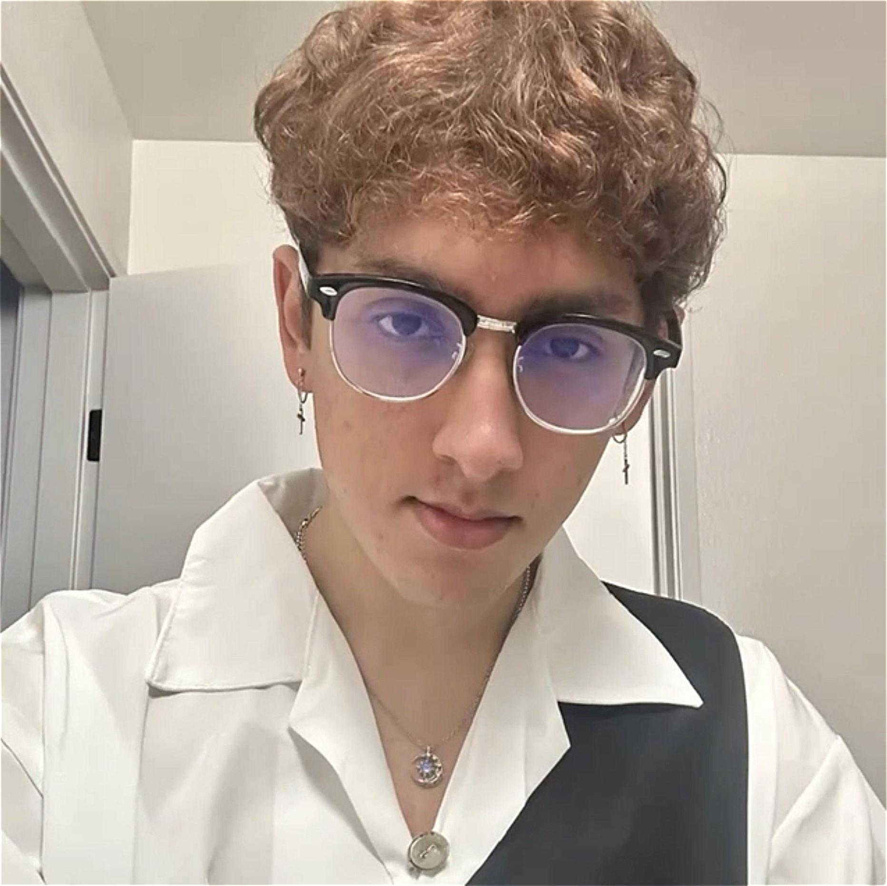
Sharp → blur → resharpen
For the last test I took the original sharp selfie, blurred it with the same Gaussian, and sharpened the blurred copy with α = 2.0 to see whether I could get the original back.
Resharpening does increase edge contrast again: the frames of the glasses and the larger curls of hair look crisper than in the blurred copy. But it can't recover high-frequency information that the blur actually removed. The finest strands of hair and the skin texture stay gone, and what comes back is extra contrast on the edges that survived the blur. So the result looks sharper than the blurred version without turning back into the original.

Crops are the same output files, zoomed in on the page. Click any image to open the full file.
Hybrid Images
A hybrid image adds the low frequencies of one image to the high frequencies of another. Up close the high frequencies dominate, because fine edges are what your eye locks onto. From far away, or when the image is small, those edges are too fine to resolve, and the low-frequency image takes over.
The low-pass is a Gaussian blur with σlow. The high-pass is the image minus its own Gaussian blur with σhigh. Before filtering, I aligned each pair by clicking the same two points (the eyes) in both images. For Derek and Nutmeg I used the provided align_images. For the other two I wrote align_to_reference, which fits a similarity transform to the clicked points and warps the low-frequency image straight into the high-frequency image's frame, so the canvas doesn't grow or pick up black padding.
To judge viewing distance I looked at every hybrid at full size and as an 18% copy, and tuned the sigmas until both read the way I wanted.
Hybrid 1 Derek + Nutmeg
Derek is the high-frequency image and Nutmeg is the low-frequency one. My final values were σhigh = 2 and σlow = 8. The large σlow reduces Nutmeg to a soft, cat-shaped blur, and the small σhigh keeps only Derek's sharpest edges — eyes, teeth, hairline, collar. I went back and forth between the normal-size and reduced versions while tuning. Up close it reads as Derek with tabby stripes across his face; in the small copy the cat takes over.
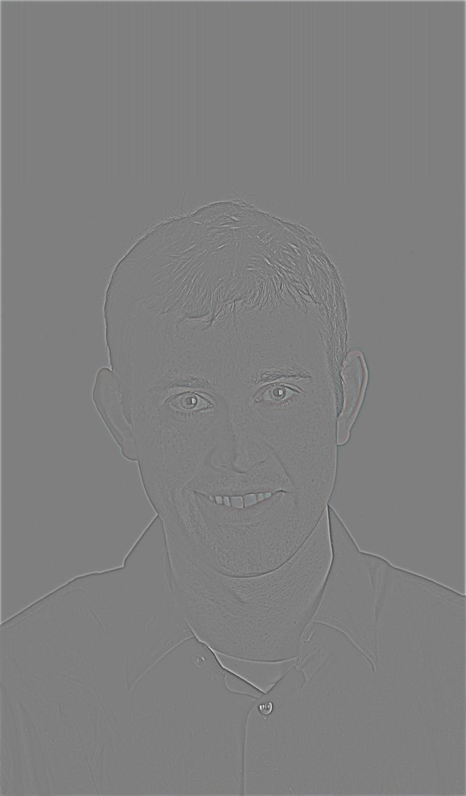
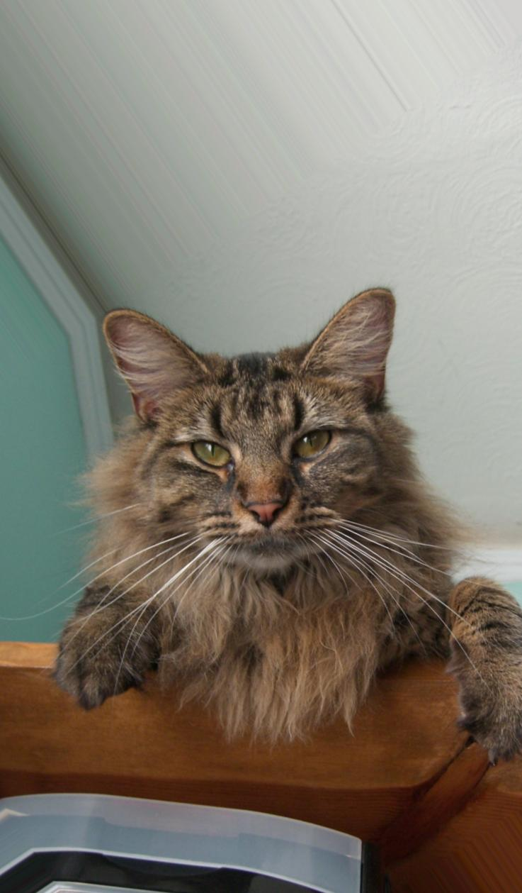
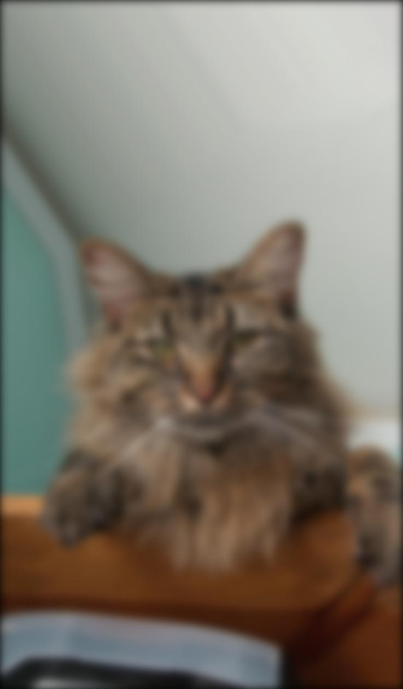
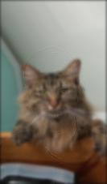
Bells & Whistles Color in the hybrid
Does color work better in the high-frequency component, the low-frequency component, or both? I rebuilt Derek + Nutmeg four ways with the same σhigh = 2 and σlow = 8: grayscale everywhere, color only in Derek's high frequencies, color only in Nutmeg's low frequencies, and color in both. For the gray versions I ran the aligned image through rgb2gray and copied it into three channels, so every variant goes through the same hybrid_image().
Grayscale
Color high only
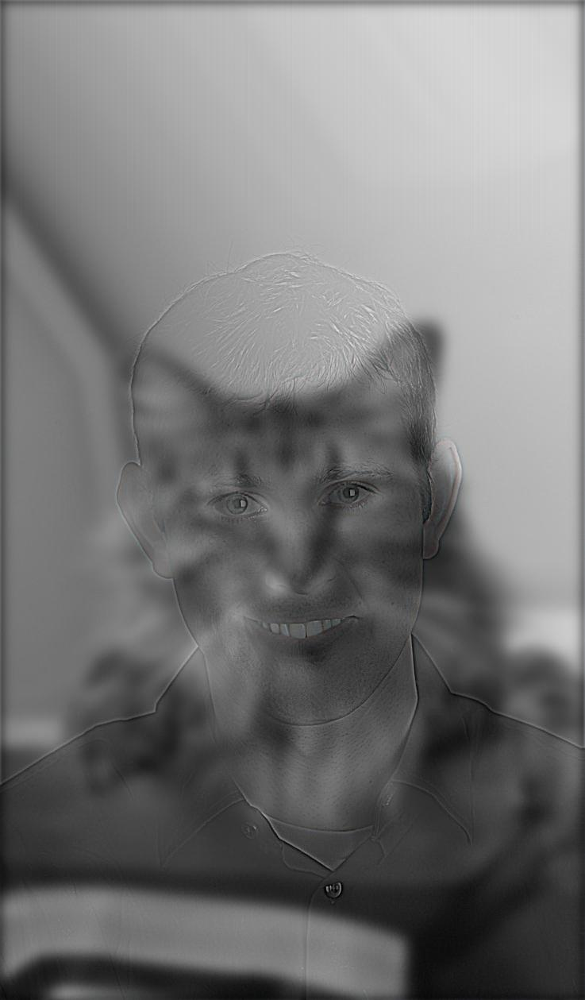
Color low only my pick
Color both
Color in the high frequencies does almost nothing. A σ = 2 high-pass only keeps details a few pixels wide, and Derek's colors (skin, shirt, the gray backdrop) change slowly across the photo, so they get thrown out along with the low frequencies. What's left is mostly brightness edges like his eyes, teeth and hairline, which look the same in gray.
Color in the low frequencies is what changes the picture. Nutmeg's orange fur, the teal wall and the brown ledge all survive the σ = 8 blur, so in the small copies the colored versions look like an actual photo of a cat instead of a gray one. "Both" looks basically the same as "low only" for the same reason the high-frequency color didn't matter. One side effect I noticed up close: Nutmeg's eyes sit right under Derek's after alignment, so in color his irises turn yellow-green. The trade-off is that a colorful cat competes a bit more with Derek's face up close, though his eyes and teeth still come through. So I'd put color in the low-frequency image, which in practice is the same as coloring both, and that's what my main hybrids already do.
Robert Pattinson → Robert Pattinson
Edward + Batman
Same actor, two very different roles. edward2.jpg is Pattinson as Edward Cullen and batman2.jpg is Pattinson in the Batsuit. Edward is the high-frequency image, so up close you get his hair, eyes, jaw and the seams of the jacket. Batman is the low-frequency image, so from farther away the cowl's dark band across the eyes, the shadowed neck and the bulk of the suit take over.
The Batman image needed a stronger low-frequency contribution before it read clearly from far away, so I kept σlow fairly small at 4, since less blur means more of the cowl survives. σhigh = 2 keeps Edward to the fine edges. Both photos are close to frontal, so two-point alignment on the eyes was enough.
edward_batman_far.jpg at its native size.Frequency analysis
This is the hybrid I did the full Fourier analysis on. Each spectrum is log(1 + |F|) of the grayscale image after fftshift, normalized on its own for display. The center is zero frequency, and distance from the center is spatial frequency.
The bright cross through the middle comes from the image borders: the FFT treats the image as if it tiles periodically, so the jump from one edge to the opposite one acts like a sharp vertical and horizontal edge.
Aligned input
Spectrum
Filtered
Spectrum after filtering
Edward high-pass, σ = 2
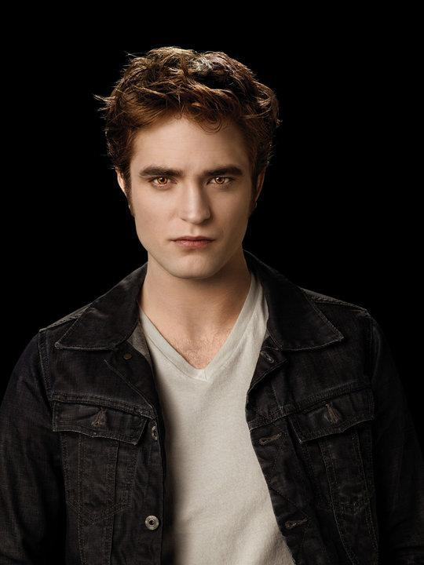
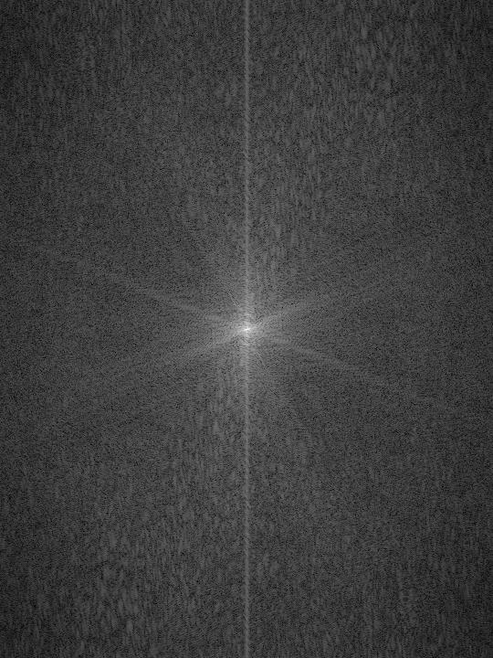
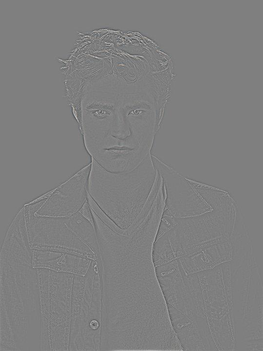
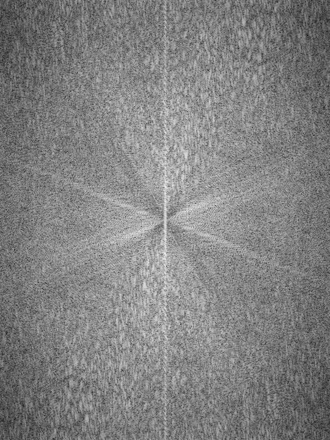
Batman low-pass, σ = 4
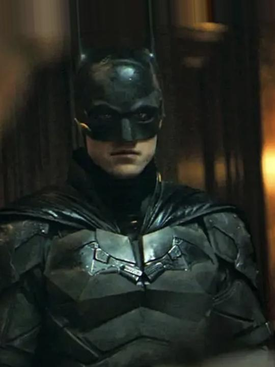
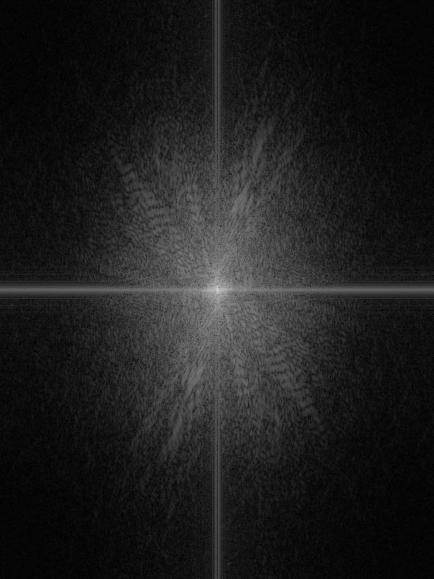
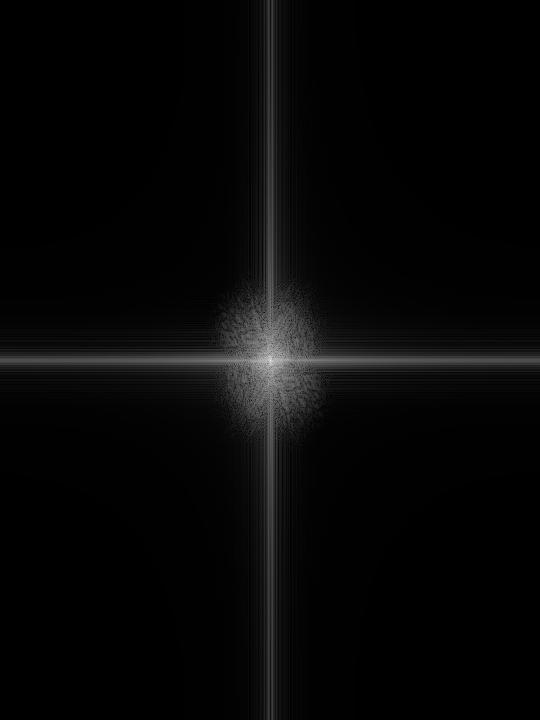
Hybrid sum of both
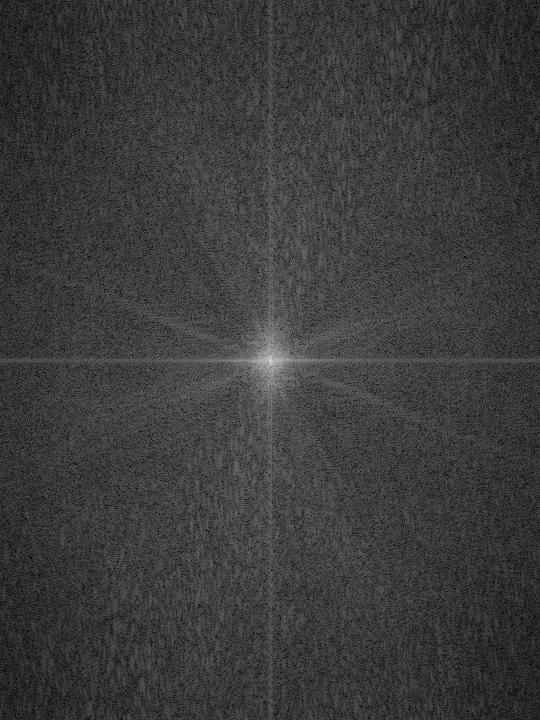
After low-passing, Batman's spectrum collapses to a small bright patch at the center; everything farther out is cut off. After high-passing, Edward's spectrum loses its central peak and what's left is spread out toward the edges. The hybrid's spectrum is roughly the two added together: Batman's concentrated center plus Edward's wide spread.
A Gaussian with spatial σ has frequency response exp(−2π²σ²f²), which falls to half amplitude at about f ≈ 0.187 / σ cycles per pixel. For this pair that gives:
| Image | Filter | σ | Kernel | Keeps | Across 540 px |
|---|---|---|---|---|---|
| Batman | low-pass | 4 | 25 × 25 | f ≲ 0.047 cycles/px | ≈ 25 cycles |
| Edward | high-pass | 2 | 13 × 13 | f ≳ 0.094 cycles/px | ≈ 51 cycles |
Between about 0.05 and 0.09 cycles per pixel both images are partly attenuated, so they aren't fighting over the same band.
Zendaya + Mona Lisa
This one was mostly an alignment problem. Mona Lisa isn't facing the viewer straight on; her head is turned a few degrees and slightly tilted. I first tried a straight-on red-carpet photo of Zendaya (zendaya.jpg), but the straight-on photo actually aligned worse: once the eyes lined up, her nose, mouth and jaw didn't land where Mona Lisa's do. So I switched to zendaya2.jpg, where her face is angled much closer to the painting's pose. It also helps that this photo already sits in front of a painted, Mona Lisa–style landscape, so the backgrounds don't fight.
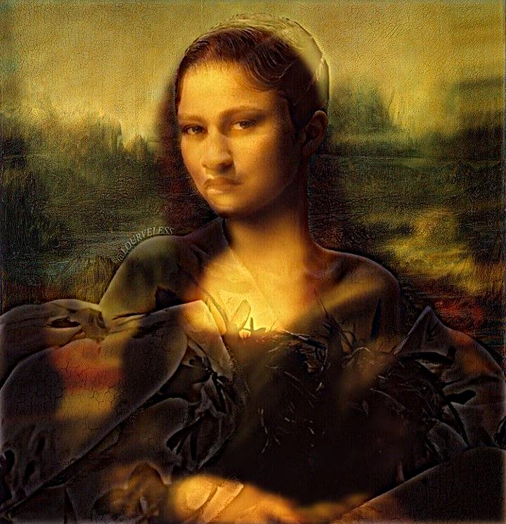
Sampurn Bhowmick
Zendaya / Mona Lisa, 2026
Hybrid image. High-pass of zendaya2.jpg (σ = 5) added to low-pass of Mona_Lisa.jpg (σ = 4). 720 × 745 px.
After Leonardo da Vinci, Mona Lisa, c. 1503–1519.
Zendaya is the high-frequency image and Mona Lisa the low-frequency one. Here σhigh is larger than σlow, so the two bands overlap a little: the bigger high-pass σ keeps more than just Zendaya's finest edges, which her face needs in order to hold up against a painting with strong structure of its own. From far away the painting's dark hair, soft face and landscape take over.
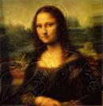
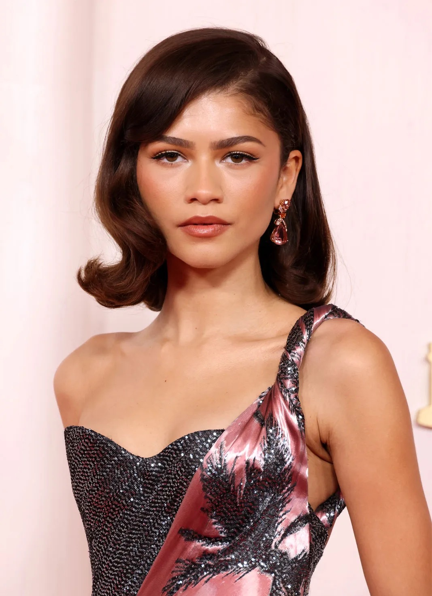
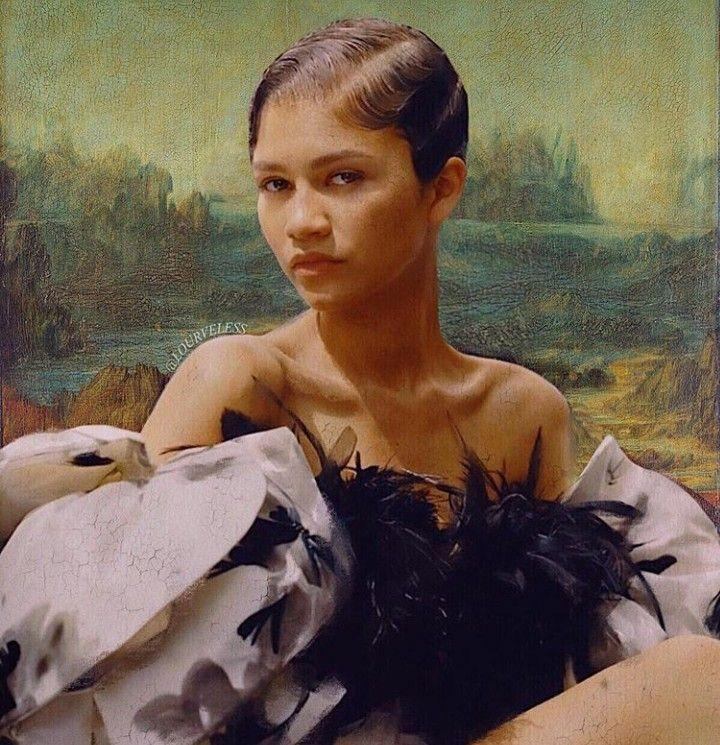
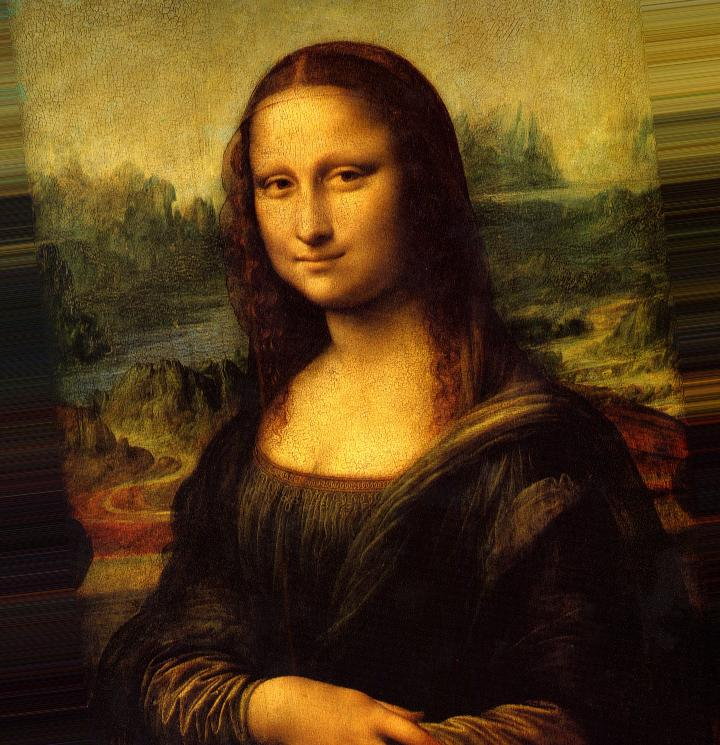
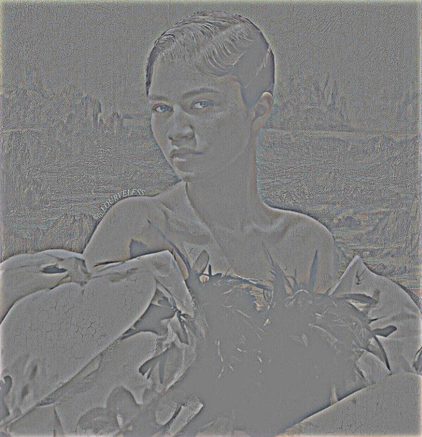
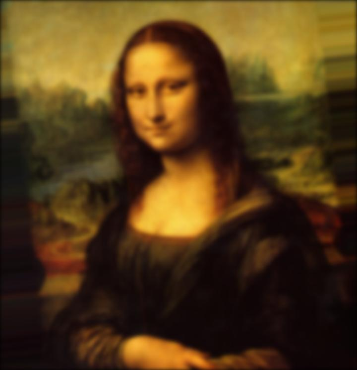
Spectra for this pair · same log |F| display · cutoffs ≈ 0.037 (high-pass) and 0.047 (low-pass) cycles/px
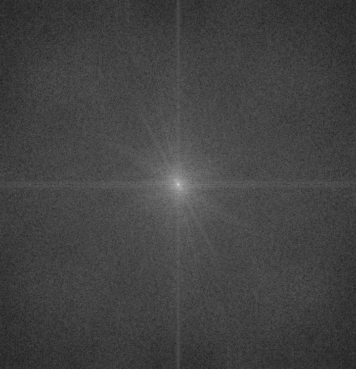
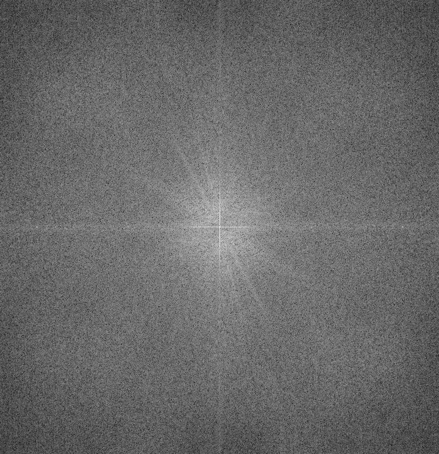
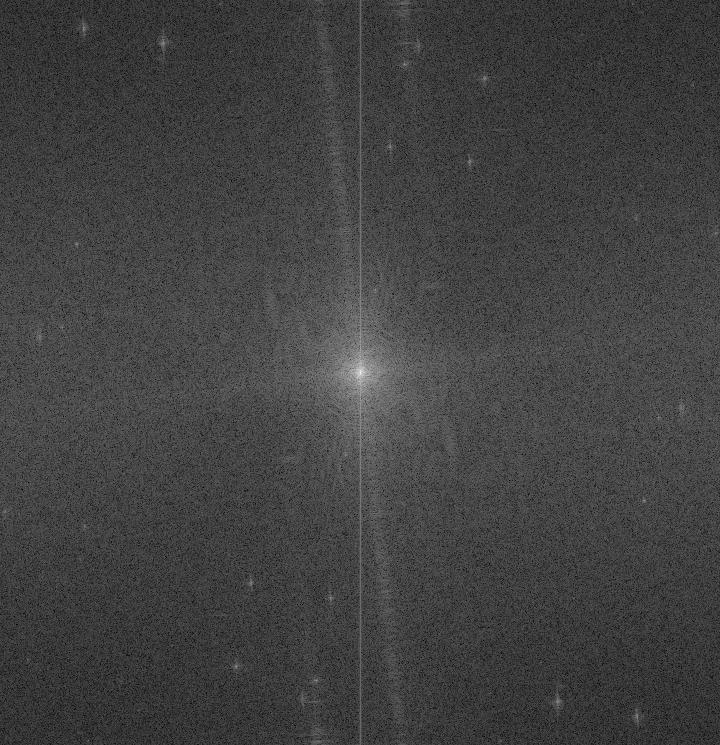
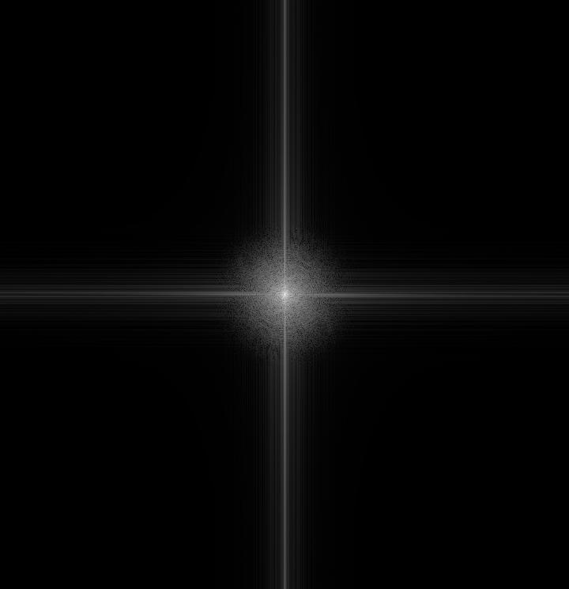
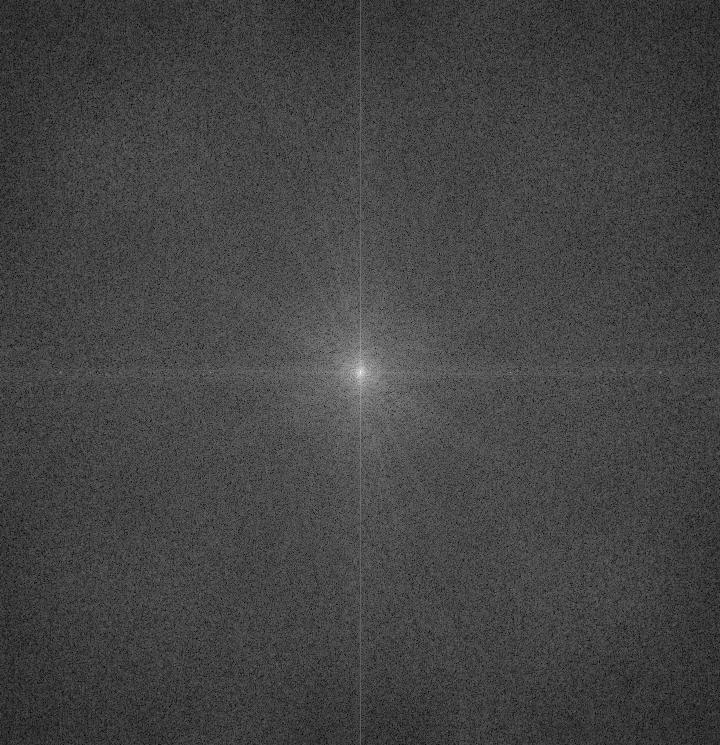
Gaussian and Laplacian Stacks
These are stacks, not pyramids: there's no downsampling, so every level keeps the full 300 × 300 size. Level i of the Gaussian stack is the original blurred with σ = 2i−1, so the five levels have σ = 0 (the original), 1, 2, 4 and 8. Each level is blurred from the original directly, not from the level before it.
Each Laplacian level is the difference between neighboring Gaussian levels, Li = Gi − Gi+1, so it holds just the detail between two blur scales. The last level is the coarsest Gaussian itself, L4 = G4, so nothing gets thrown away. Laplacian levels are signed, so I display them as 0.5 + 0.5 · L / max|L| — flat gray means zero.
Level 0σ 0
Level 1σ 1
Level 2σ 2
Level 3σ 4
Level 4σ 8
AppleGaussian
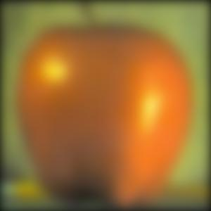
AppleLaplacian
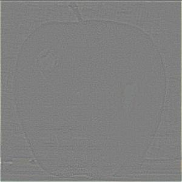
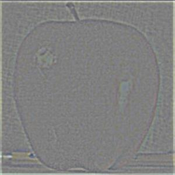
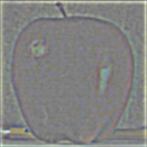
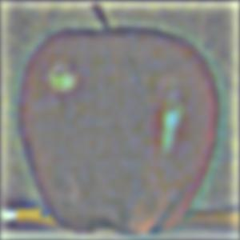

OrangeGaussian

OrangeLaplacian
Reading down the columns, the orange's dimpled peel lives mostly in L1 and L2, the outlines and the apple's highlights get stronger through L2–L3, and the residual is just color and lighting.
Because the differences telescope, adding up all five Laplacian levels gives back G0, the original. The reconstruction is exact up to floating-point error:
Max |original − Σ Li|
Apple 1.1102230246251565e-16 Orange 1.1102230246251565e-16
Multiresolution Blending
The simplest way to join two images is a cross-fade with a fixed-width ramp, and there's no good width. If the ramp is too narrow, broad changes like overall color and lighting switch abruptly and you see a seam. If it's too wide, fine details from both images overlap across a big band and you get doubled edges.
Multiresolution blending uses a different transition width for each frequency band. I take the Laplacian stack of each image and the Gaussian stack of the mask, and blend level by level:
LS,i = GM,i · LA,i + (1 − GM,i) · LB,i
result = Σi LS,i
In words: at each level, use image A's band where the blurred mask is white and image B's band where it's black, with the mask blurred by the same σ as that level. Fine detail gets a nearly hard mask and switches over quickly; the low-frequency residual gets a mask blurred with σ = 8, so color and lighting fade across a much wider strip. Adding the blended levels back up gives the result. The mask stack uses symmetric boundary handling so the mask doesn't fade toward black at the image border.
multiresolution_blend()for i in range(levels):
m = mask_stack[i][:, :, None]
part_a = m * lap_a[i]
part_b = (1.0 - m) * lap_b[i]
blended = part_a + part_b
...
result = np.sum(np.stack(blended_levels), axis=0)Required The Oraple
Apple on the left, orange on the right, split with a binary mask down the middle. The hard seam is obvious mostly because the colors and lighting don't match. In the multiresolution version that boundary is gone: the color shifts gradually from red to orange, while the apple's smooth skin and the orange's dimpled texture still meet along a fairly sharp line.


The table below breaks the blend down by level, like Figure 3.42 in Szeliski. The mask row is the key. At L0 and L1 the mask is still basically a hard edge, so the apple and orange contributions meet in a narrow line right at the seam. By L4 it has been blurred with σ = 8, and the transition spreads well into both halves of the fruit. High-frequency transitions stay localized around the seam while low-frequency transitions spread farther across it, which is why the final seam is so much less distracting.
L₀ · highσ 0 → 1
L₁σ 1 → 2
L₂ · middleσ 2 → 4
L₃σ 4 → 8
L₄ · lowresidual, σ 8
MaskGM,i

AppleGM · LA
Orange(1 − GM) · LB
BlendedLS,i
Sum of the bottom row = the Oraple (2.4e). Signed levels are displayed around gray; L₄ is shown as a normal image.
2.4 · Custom blend 1 · straight vertical seam
The Desperate Man + Get Out
I noticed that Gustave Courbet's The Desperate Man and the crying close-up from Get Out are built around the same thing: a face in the middle of the frame, eyes wide open, frozen in panic. The hybrids had already turned into a film-and-painting project, so this pair fit.
It's a straight vertical seam: Courbet on the left, Get Out on the right. I warped getout.jpg into the painting's 1500 × 1228 frame with the same two-point alignment as the hybrids, lining up the eyes, and blended with the same five-level stacks as the Oraple.
Up close the difference is smaller than with the Oraple. The step in skin tone and lighting right at the seam is softer, but the split is still clearly there: this image is 1500 px wide and my coarsest level only uses σ = 8, so even the low-frequency transition is a few dozen pixels across. Since the point of this pair is the two expressions side by side, I kept the straight split. A deeper stack (bigger σ at the bottom level) is what I'd use if I wanted the seam to disappear.
2.4 · Custom blend 2 · irregular mask
Edward, inside the cowl
For the last blend I wanted Pattinson's two roles in one frame again, this time with Edward's face sitting inside Batman's cowl. batman.jpg is the base image and edward.jpg goes inside. These are different photos from the 2.2 hybrid: here the Batman still has the dusky Gotham skyline behind him, and the Edward still has the teal-green Forks look.
I warped the Batman image into Edward's 700 × 525 frame so the faces line up, and made an elliptical mask: white selects Edward, black selects Batman. The ellipse is centered at (0.50w, 0.45h) with radii 0.24w × 0.34h, about 168 × 179 px, so it's close to a circle around the face. The bat ears are outside it, which is why they stick up out of Edward's hair.
With a hard mask the face looks like a sticker. In the multiresolution version the Gaussian mask stack softens the edge differently at each frequency: hair and fine edges switch from Edward to Batman within a pixel or two, while broad color and lighting fade over tens of pixels. So Edward's face settles into the cowl instead of sitting on top of it. If I did it again I'd trace the mask closer to his face. The ellipse is wider than his head, so a ring of teal Forks background comes in with him.

L₀ · highσ 0 → 1
L₁σ 1 → 2
L₂ · middleσ 2 → 4
L₃σ 4 → 8
L₄ · lowresidual, σ 8
MaskGM,i

EdwardGM · LA
Batman(1 − GM) · LB
BlendedLS,i
Same layout as the Oraple table. The ellipse's edge is nearly hard in L₀–L₁ and spreads out by L₄, which is where the teal-to-orange color change happens.
Takeaway
Most Important Thing I Learned
The biggest thing I learned is that it became much easier to reason about all of these operations once I stopped thinking of an image as one object and started thinking about it as information at different spatial scales.
Derivatives pull out the fastest changes, the high frequencies, which is exactly why they're so sensitive to noise and why blurring first helps. Sharpening is the same split used the other way around: isolate the high frequencies and add more of them. Hybrid images assign a different identity to each frequency band, so which one you see depends on which band your eye can resolve from where you're standing. Multiresolution blending gives each band its own transition width. Once I saw it that way the Oraple stopped feeling like a trick: of course color should fade slowly and texture should switch fast.